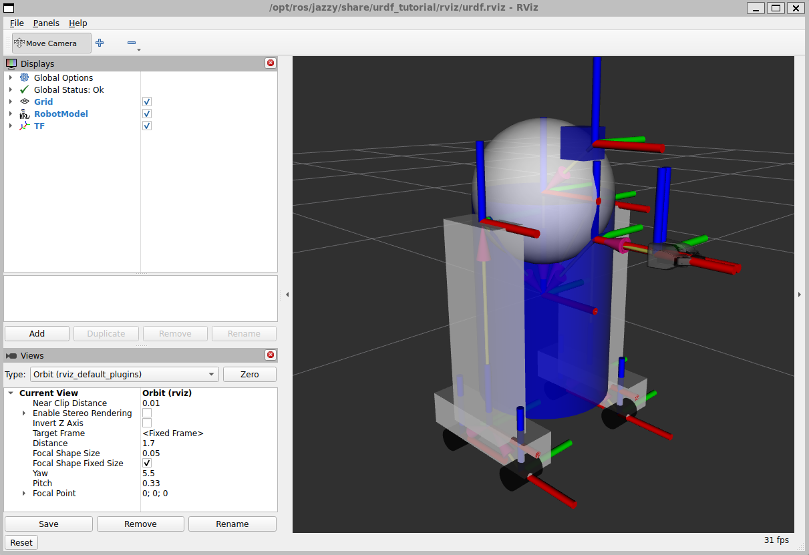
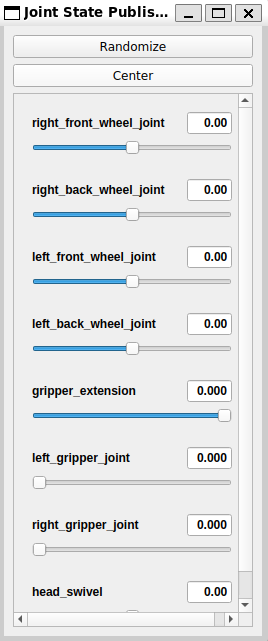
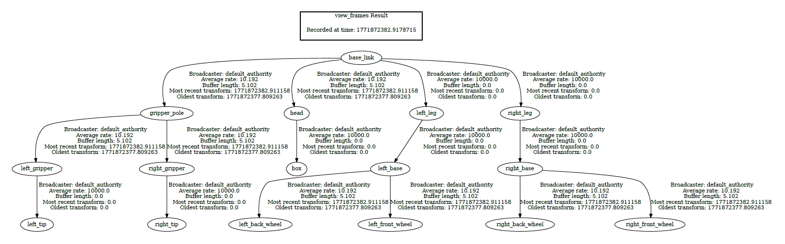

RViz2 and TF
In this lesson you will visualize a robot model and explore its TF frames (transforms) using RViz2 and the urdf_tutorial example package.
Install the urdf_tutorial package
Install the binary package for Jazzy:
Locate the installed URDF files
Installed packages live under:
The urdf_tutorial package assets are here:
You should see multiple example URDF files (numbered examples).
Launch the URDF demo in RViz2
Run the display launch file and provide a URDF file using the model:= argument:
ros2 launch urdf_tutorial display.launch.py model:=/opt/ros/jazzy/share/urdf_tutorial/urdf/08-macroed.urdf.xacro
If your file name differs, use tab-completion after typing:
What you should see:
- An RViz2 window showing a robot model

- A Joint State Publisher GUI window (sliders)

RViz2 controls
In RViz2:
- Left mouse drag: rotate view
- Right mouse drag / scroll: zoom
- Middle mouse drag (scroll click): pan
- The yellow marker indicates the current rotation center (you can move it by panning)
RobotModel: links (rigid parts)
In RViz2, on the left panel:
- Find RobotModel
- Expand Links
A link is a rigid part of the robot (a physical piece).
You can:
- Enable/disable individual links (hide/show parts)
- Adjust Alpha (transparency) to see inside the model
7) TF: frames and transformation matrices
Enable the TF display in RViz2 and expand:
- TF → Frames
Each frame is a coordinate system attached to a robot part (often one per link/joint region).
Axis color convention in ROS
In most ROS robots, frames follow this convention:
- X axis: red (forward)
- Y axis: green (left)
- Z axis: blue (up)
So when you see a TF frame in RViz2: - red arrow = x - green arrow = y - blue arrow = z
Move joints
Use the Joint State Publisher GUI sliders.
Try moving:
- a wheel joint (rotation)
- a gripper extension (translation)
- a head joint (rotation)
As you move a joint:
- the robot model changes pose
- the TF frames associated with that joint/link update in real time
What to watch for
- For a rotation joint:
- one axis stays fixed (the axis of rotation)
-
the other axes rotate around it
-
For a translation joint:
- the frame shifts linearly along an axis
Node Verification
While the demo is running, check nodes:
You should see nodes typically like:
robot_state_publisherjoint_state_publisherorjoint_state_publisher_guirviz2
You can also inspect TF topics:
You should see:
- /tf
- /tf_static
Get TF frame information
To see all TF frames and their relationships we need to install a tool:
Then run:
This will generate a PDF file with a graph of all TF frames and their connections.